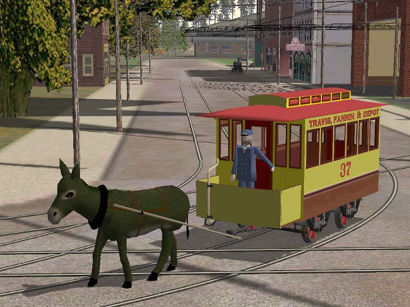
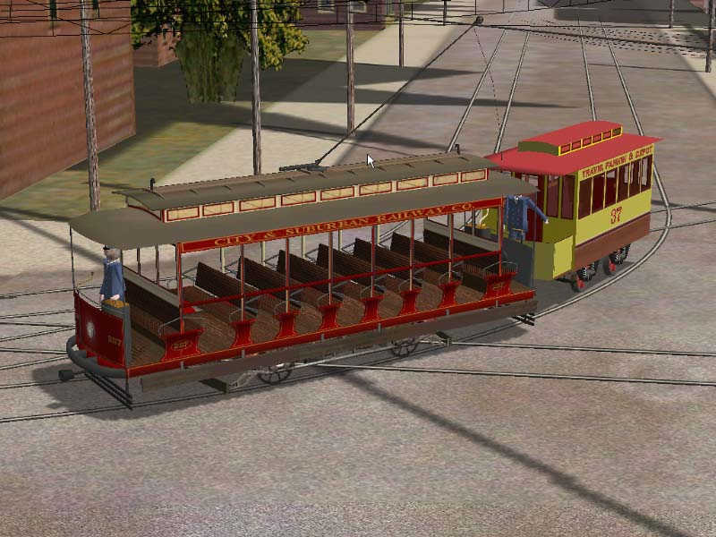
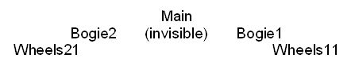

Wheels With Spokes As Separate Parts: Making Them Rotate Yogether
by Paul DeVerter
A Port City Car Co. Project Copyright © 2004
Overview
Assume that you have built a new vehicle (loco, freight or passenger car, doesn't matter which), and that you are using TSM. Suppose you have constructed the wheels as two or three parts, such as the tires, and the spokes. You did this so that you could change the color of the spokes from time to time, and have that color distinct from the color of the tires.
Also assume that your vehicle will need to have bogies. If you make a short vehicle, and you run it on default MSTS track, and you only have 2 axles, you could probably skip the bogies, and simply parent the wheels and axles directly to the Main part. But, if you run the vehicle on very tight radius curves, you will notice that the wheels will leave the track on sharp curves and move toward the center of the radius.
To counter this problem, you will need to make the front wheels depend from a bogie, and the rear wheels depend from another bogie, and have both bogies depend from the Main. Well, this is just fine for the wheels, but how about the spokes? What are they parented to? This is a tutorial on what to do.
A Practical Example
Here is an early incarnation of my standard gauge mulecar, going around a typical short radius curve on a city street. The hierarchy is that the Wheels1 and Wheels2 are both parented to the Main. Everything turns or rotates about the axle as it is supposed to, and the Spokes1 depend from the Wheels1, etc. But the wheels are off the track.

I asked for help from the Port City members, and got two solutions. JW Titus suggested changing the values in the wag or eng file that deal with the mysterious numbers following the r0 line in the coupling section. The thought was that the value, which read "r0 ( 20cm 30cm )" need to be changed to allow more stretch or give in tight curves, and a value of "r0 ( 10cm 40cm)" might work, or even 5cm 45cm.
The second solution was based on one of Tim Muir's cars which had originally had the same problem, but which was corrected by changing the hierarchy. Here is his car pulling the mulecar. As you can see, his wheels are on the track, and mine are not.

His solution was to insert invisible bogies between the Main and the Wheels. This would allow the axles to track the curve, even though it causes the axles to move a little bit when going around curves.
This is what his hierarchy looks like:

The Bogies are simply single sided polygons, made very small, textured, and hidden in the frame somewhere above the respective Wheels.
I tried Tim's solution and it worked. However by this time I had merged the various parts of the Wheel, so that the spokes, axle, hub, and tire were all one part. So that was the easy solution to making the wheels follow the track.